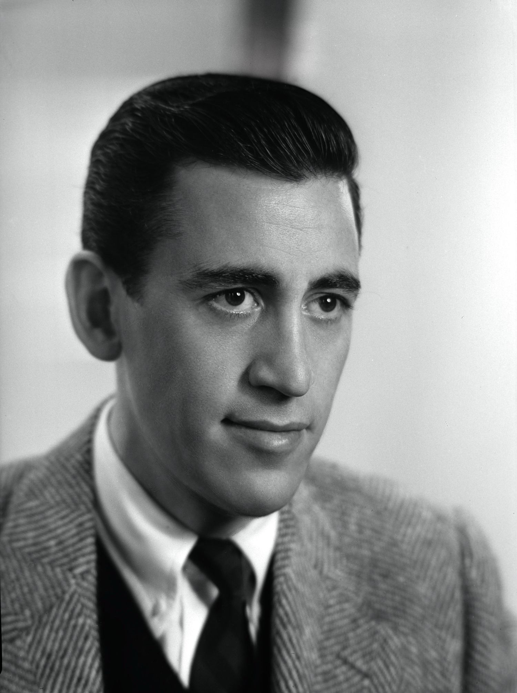

J.D. Salinger
Jerome David "J. D." Salinger (/ˈsælɪndʒər/; January 1, 1919 – January 27, 2010) was an American writer who won acclaim early in life. He led a very private life for more than a half-century. He published his final original work in 1965 and gave his last interview in 1980.Salinger was raised in Manhattan and began writing short stories while in secondary school. Several were published in Story magazine in the early 1940s before he began serving in World War II. In 1948, his critically acclaimed story "A Perfect Day for Bananafish" appeared in The New Yorker magazine, which became home to much of his later work. In 1951, his novel The Catcher in the Rye was an immediate popular success. His depiction of adolescent alienation and loss of innocence in the protagonist Holden Caulfield was influential, especially among adolescent readers.